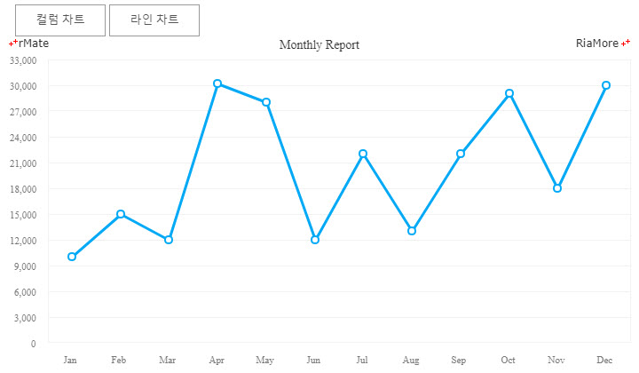
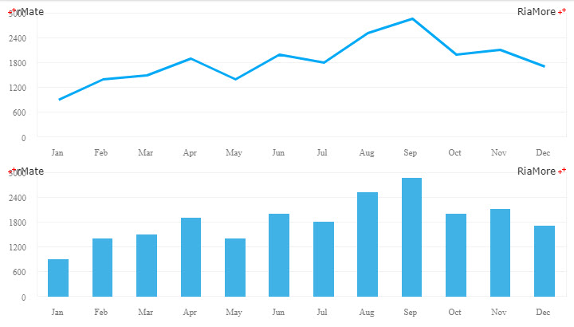
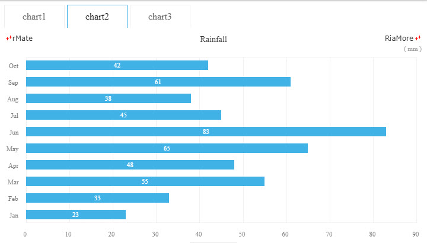
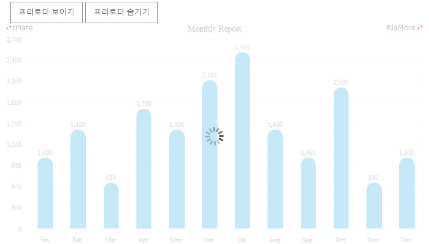
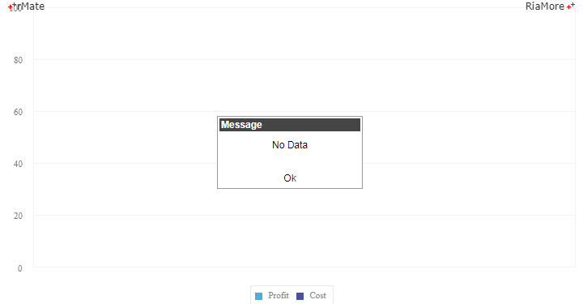

API 함수 활용
알메이트 차트에서 제공하는 API 함수는 차트 개발시 여러 가지 목적으로 유용하게 활용될 수 있습니다.
API 함수를 호출하는 방식은 자바스크립트의 차트 엘리먼트를 통해서 해당 API 함수를 직접 호출하는 방식입니다.
document.getElementById("Chart Identifier").API Function Name();
차트의 크기 재설정
차트의 크기는 resize() 함수를 호출하여 조정할 수 있습니다.
다음은 차트가 위치한 <div> 의 크기를 변경한 후, resize() 함수를 호출하는 예제 코드입니다.
예제 코드에서 “chartHolder” 는 차트가 생성되는 부모 <div> 의 식별자이고, “chart1” 은 차트의 식별자입니다.
function changeChart(w, h) {
var ch = document.getElementById("chartHolder")
ch.style.width = w+"px";
ch.style.height = h+"px";
document.getElementById("chart1").resize();
}

See the CodePen 알메이트 차트 - 차트의 크기 재설정
알메이트 차트에서 제공하는 API 함수 리스트는 API 함수를 참조하십시요.
동적 레이아웃과 데이터셋 적용
차트가 처음 생성된 이후에 데이터셋의 변경이 발생하여 변경된 데이터셋을 적용하여 차트를 다시 생성하고자 한다면 setData() 혹은 setDataURL() 함수를 호출합니다.
그리고 레이아웃의 변경이 발생하여 변경된 레이아웃을 적용하여 차트를 다시 생성하고자 한다면 setLayout() 혹은 setLayoutURL() 함수를 호출합니다.
다음은 좌측 상단의 버튼을 클릭하면 해당 유형의 차트를 생성하는 레이아웃을 적용하여 동적으로 차트를 생성하는 예제입니다.
function changeColumn() {
document.getElementById("chart1").setLayoutURL(layoutURL);
}
function changeLine() {
document.getElementById("chart1").setLayout(layoutStr);
}
<div class="button button_top" onclick="changeColumn()">Column Chart</div>
<div class="button button_top" onclick="changeLine()">Line Chart</div>

See the CodePen 알메이트 차트 - 동적 레이아웃과 데이터셋 적용
한 페이지에 여러 개의 차트 생성
여러 개의 차트를 하나의 페이지에 생성하기 위해서는 rMateChartH5.create() 함수를 원하는 횟수 만큼 호출하면 됩니다.
이 때 함수의 파라미터 값으로 지정되는 차트의 식별자와 차트가 생성될 <div> 의 식별자는 반드시 구분이 되어야 하고,
차트가 생성될 <div> 는 HTML 문서에 구성이 되어 있어야 합니다.
chartVars 변수에 설정되는 차트 생성 작업을 위한 준비가 완료되면 호출되는 함수는 차트 개발자의 편의에 따라서 각 차트별로 별도로 만들 수도 있고, 하나로 구현할 수도 있습니다.
다음은 하나의 chartVars 변수를 이용(차트 생성 작업을 위한 준비가 완료되면 호출되는 함수도 하나를 이용)하여 두 개의 차트를 한 화면에 구현하는 예제입니다.
var chartVars = "rMateOnLoadCallFunction=chartReadyHandler";
rMateChartH5.create("chart1", "chartHolder1", chartVars, "100%", "100%");
rMateChartH5.create("chart2", "chartHolder2", chartVars, "100%", "100%");
function chartReadyHandler(id) {
document.getElementById(id).setLayout(id == "chart1" ? layoutStr : layoutStr2);
document.getElementById(id).setData(chartData);
}
<div id="chartHolder1" style="height:200px;"/>
<div id="chartHolder2" style="width:100%;height:200px;float:left;"/>

See the CodePen 알메이트 차트 - 한 페이지에 여러 개의 차트 생성
jQuery 탭 연동
한 페이지에 여러 개의 차트를 생성한 후 jQuery 탭과 연동하여 사용자가 탭을 클릭하면 해당 차트를 화면에 표시하는 기능을 구현할 수 있습니다.
다음은 이에 대한 예제 코드입니다.
var chartVars = "rMateOnLoadCallFunction=chartReadyHandler";
rMateChartH5.create("chart1", "chartHolder1", chartVars, "100%", "100%");
function chartReadyHandler(id) {
document.getElementById(id).setLayout(window["layoutStr" + id.replace(/\D/g, "")]);
document.getElementById(id).setData(chartData);
document.getElementById(id).resize();
}
$(document).ready(function() {
$("#jqueryTabs").tabs();
$("#jqueryTabs > ul").click(function(event) {
var i, a, as, content,
tagName = event.target.tagName.toLowerCase();
if (tagName == "a" || tagName == "li") {
as = $("#jqueryTabs a");
for (i = 0 ; i < as.length ; i += 1) {
a = as[i];
$(a.parentNode).removeClass("li_select");
content = a.innerHTML;
if(content == event.target.innerHTML) {
$(a.parentNode).addClass("li_select");
if(!document.getElementById(content))
rMateChartH5.create(content, "chartHolder" + content.replace(/\D/g, ""), chartVars, "100%", "100%");
}
}
}
});
});
<div id="jqueryTabs">
<ul>
<li class="li_select"><a href="#chartHolder1">chart1</a></li>
<li><a href="#chartHolder2">chart2</a></li>
<li><a href="#chartHolder3">chart3</a></li>
</ul>
<div id="chartHolder1" style="width:850px;height:400px;"></div>
<div id="chartHolder2" style="width:850px;height:400px;"></div>
<div id="chartHolder3" style="width:850px;height:400px;"></div>
</div>

See the CodePen 알메이트 차트 - jQuery 탭 연동
위 예제 코드를 살펴보면, rMateChartH5.create("chart1", "chartHolder1", chartVars, "100%", "100%"); 함수의 실행에 의해서 “chart1” 이 생성되고, “chart2” 와 “chart3” 는
$(document).ready(function() 함수 내에서 rMateChartH5.create(content, "chartHolder" + content.replace(/\D/g, ""), chartVars, "100%", "100%"); 함수의 호출에 의해서 생성되도록 구현되어 있습니다.
탭 클릭시에 활성화될 차트는 $("#jqueryTabs > ul").click(function(event) 함수에서 설정됩니다.
프리로더
showAdditionalPreloader() 와 removeAdditionalPreloader() 함수를 이용하여 프리로더 기능을 차트에 구현할 수 있습니다.
다음은 이에 대한 예제입니다. 아래 예제에서는 차트가 생성되는 순간에 프리로더 이미지가 보여지고, 좌측 상단의 버튼을 클릭하여 프리로더 이미지의 보이기와 감추기를 시뮬레이션할 수 있습니다.
function chartReadyHandler(id) {
document.getElementById("chart1").showAdditionalPreloader();
document.getElementById(id).setLayout(layoutStr);
document.getElementById(id).setData(chartData);
setTimeout(function(){
document.getElementById("chart1").removeAdditionalPreloader();
}, 1000);
}
function showPreloader() {
document.getElementById("chart1").showAdditionalPreloader();
}
function hidePreloader() {
document.getElementById("chart1").removeAdditionalPreloader();
}
<div class="button button_top" onclick="showPreloader()" >Show Preloader</div>
<div class="button button_top" onclick="hidePreloader()" >Hide Preloader</div>

See the CodePen 알메이트 차트 - 프리로더 설정
Null 데이터
차트에 표현할 데이터가 하나도 존재하지 않는 경우(null)에 이를 사용자에게 알려주는 함수는 hasNoData() 입니다.
hasNoData() 함수의 파라미터는 “true” 혹은 “false” 입니다.
- true: 데이터가 없는 차트를 표시하고 데이터가 없다는 팝업 메시지를 보여줍니다.
- false: 화면에 차트와 메시지를 표시하지 않습니다.
다음은 hasNoData() 함수를 이용하여 팝업 메시지를 보여주는 예제입니다.
function chartReadyHandler(id) {
document.getElementById(id).setLayout(layoutStr);
document.getElementById(id).setData(chartData);
checkData(chartData);
}
var chartData = [];
function checkData(data){
if(data.length <= 0)
document.getElementById("chart1").hasNoData(true);
}

See the CodePen 알메이트 차트 - 차트에 표시할 데이터가 없을 경우